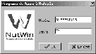
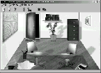
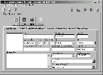
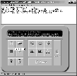
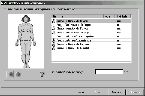
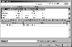

|
|
Programa
de Apoio à Nutrição |
Sumário
Instalando para Windows 9x / Me
/ ou 2000/ XP (monousuário)
Instalando para Windows 2000 /
NT / XP em rede local:
O
Programa de Apoio à Nutrição - NutWin
Exemplo de Plano Alimentar
(Dieta)
O Programa de Apoio à Nutrição está protegido pela lei nº 9.609/98, que dispõe sobre a proteção da propriedade intelectual de programas de computador e sua comercialização no país.
O Departamento de Informática em Saúde da Universidade Federal de São Paulo, na condição de autor do programa, é titular exclusivo e proprietário intelectual.
A reprodução não autorizada constituirá crime com pena prevista na lei.
O autor permite que o usuário legalmente cadastrado faça uma cópia de segurança com o único objetivo de garantir a reprodução do CD-ROM original, no caso de perda de arquivos do programa, de forma a não interromper o uso do mesmo.
MARCAS CITADAS NESTE GUIA
Windows 9x, Me, 2000 e NT são marcas registradas da Microsoft Corporation.
InterBase 6.0 é marca registrada da Borland Software Corporation.
BDE 5.01 pertence a Inprise Corporation
Esta versão do programa NutWin é monousuário, portanto não deve ser instalada em servidores ou compartilhada através de rede sob risco de não funcionar adequadamente.
Pré-requisitos para o adequado funcionamento do programa:
• Requisitos mínimos: Microcomputador PC ou compatível, com processador Pentium 300 MHz, 64 MB de memória RAM, 80 MB de espaço disponível no disco rígido, resolução de 800X600, Windows 9x, Me, 2000 ou NT;
• Configurações Regionais (Painel de Controle) ajustadas para Português-Brasil; utilizar vírgula como separador de casa decimal e formato "dd/mm/aaaa" para data abreviada.
Componentes necessários para uso do programa:
Além dos componentes do programa NutWin, serão instalados ou atualizados, durante o processo de instalação, os seguintes componentes de distribuição livre, referente ao Banco de Dados utilizado pelo programa:
A instalação dos componentes acima pode falhar se estes já estiverem instalados e em uso por outro programa. Portanto, recomenda-se fechar todos os programas antes de começar a instalação do NutWin.
Dica: Para fechar o InterBase, localize o ícone na barra de tarefas sob o nome de InterBase Guardian e, com o botão direito do mouse, acione o menu e clique na opção shutdown. Se o seu sistema for Windows 2000, NT ou XP verifique adiante o item: "Instalando para Windows 2000 / NT / XP em rede local".
Instalando para Windows 9x / Me / ou 2000/ XP (monousuário)
Para instalar o programa, siga as instruções:
1. Coloque o CD do NutWin no drive de CD-ROM;
2. Caso o programa de instalação não seja executado automaticamente, clique com o mouse no botão INICIAR (START) da barra de tarefas e depois no item EXECUTAR (RUN);
3. No campo ABRIR (OPEN), digite a letra correspondente ao drive de
CD-ROM, seguida por dois pontos, barra invertida e a palavra CONFIG
(Ex.: D:\CONFIG);
Instalando para Windows 2000 / NT / XP em rede local:
O uso de Windows 2000 / NT / XP em estações de trabalho pode estar configurado com restrições de acesso, não permitindo a instalação de programas como o NutWin. Portanto, neste caso, é necessário que o administrador do sistema faça a instalação conforme os passos abaixo:
Antes de começar a Instalação, iniciar com o login de administrador.
Dica: Antes de executar o passo 1, crie a pasta e chave de registro descritos nos itens 7 e 8; atribua os direitos descritos e relacione com um usuário ou grupo de usuários que irá usar o NutWin. Durante a instalação, indique essa pasta já criada.
1. Coloque o CD do NutWin no drive de CD-ROM;
2. Caso o programa de instalação não seja executado automaticamente, clique com o mouse no botão INICIAR (START) da barra de tarefas e depois no item EXECUTAR (RUN);
3 No campo ABRIR (OPEN), digite a letra correspondente ao drive de
CD-ROM, seguida por dois pontos, barra invertida e a palavra CONFIG
(Ex.: D:\CONFIG);
4 Pressione a tecla ENTER ou clique sobre o botão OK;
5 Informe o Nº de série (na contra capa do CD);
6. Siga corretamente as instruções que aparecerem na tela (a instalação do InterBase será em inglês, e não deve ter as opções de instalações alteradas). Não execute o NutWin ao termino da instalação;
7. Use o aplicativo regedt32.exe ou equivalente, no item EXECUTAR (RUN) do botão INICIAR (START), para dar direitos de "Controle total" às chaves de registro: HKEY_LOCAL_MACHINE/Software/DIS-EPM\NutWin;
8. Use o Explorer para, nas propriedades da pasta onde o programa foi instalado (exemplo: C:\Arquivos de Programas\DIS-EPM), mudar os direitos de acesso para um usuário, grupo de usuários ou "Todos", propagando para todos os arquivos desta pasta;
9. Antes de executar o NutWin, usar o login do usuário com os mesmos direitos acima atribuídos.
Obs.: A atribuição de direitos de acesso e criação de usuários é de inteira responsabilidade do administrador do sistema. Portanto, os passos 7, 8 e 9 são ilustrativos e podem ser alterados desde que o mesmo efeito seja produzido.
O Programa de Apoio à Nutrição - NutWin
O Programa de Apoio à Nutrição - NutWin visa auxiliar o trabalho do profissional da área de Nutrição e Alimentação, tanto na execução de cálculos para a Avaliação Nutricional, como na organização de informações armazenadas. Auxilia também na quantificação dos nutrientes ingeridos e no processo de tomada de decisão, durante a elaboração dos Planos Alimentares.
O Programa de Apoio à Nutrição - NutWin trabalha com o conceito de Arquivos e Fichas, com todos os dados do indivíduo ou do alimento na tela. A interface gráfica facilita o uso do programa, permitindo ao usuário escolher a tarefa a ser realizada de maneira rápida e precisa.
• Gerar Avaliações Antropométricas, contemplando crianças, adolescentes, adultos, gestantes, nutrizes, idosos e portadores de deficiência física;
• Elaborar Planos Alimentares (dietas) com equivalentes protéicos e de energia e calcular inquéritos alimentares recordatórios. É possível monitorar até 77 nutrientes ou itens disponíveis na tabela, durante a elaboração dos cálculos alimentares. O usuário pode cadastrar quantos mais forem necessários
• Trabalhar com alimentos quantificados em medidas caseiras;
• Buscar, incluir, modificar e excluir os alimentos cadastrados, os indivíduos e as tabelas auxiliares do programa;
• Incluir uma receita (preparação), utilizando os alimentos cadastrados e armazená-la na tabela de composição de alimentos do programa;
• Gerar diversos relatórios dos cadastros, das consultas, dos inquéritos e dos planos alimentares como: listagem dos alimentos, grupo alimentar, medidas caseiras, nutrientes, % de gordura, IMC-adulto, IMC-adolescente, circunferência do braço, gráfico de recomendação nutricional, % de energia, itens alimentares, macronutrientes, relações nutricionais, etc.
• Cadastrar Modelos para Anamnese e Exames Bioquímicos, facilitando e agilizando o trabalho do profissional;
• Organizar através de Pastas, dos dados dos indivíduos cadastrados para uso posterior;
• Exportar dados para outros aplicativos, tais como Excel, Word e Access;
• Armazenar dados em pastas criadas pelo usuário, permitindo a recuperação para acompanhamento do paciente;
• A Calculadora Nutricional pode ser usada independente do Organizador, para efetuar rapidamente um cálculo;

Ao clicar no "Organizador", deverá aparecer a tela "SPLASH" mostrando a carga dos componentes do programa. A seguir, a janela de validação do usuário do sistema.
Usuário : SUPERVISOR Senha: NUT
Clique "OK" ou tecle "ENTER". Deverá aparecer na tela a Janela Principal.
Para garantir maior segurança de suas informações, altere a senha do Supervisor e crie novos usuários clicando em "Utilitários/ Opções/ Sistema/ Senha".
Para alterar a senha do SUPERVISOR, clique em "Editar", complete a senha atual NUT, coloque sua nova senha e confirme no campo abaixo. Não esqueça de Salvar as informações.
Para criar novo usuário, use Incluir, complete a nova senha e confirme. Não esqueça de Salvar.

Na janela principal temos a representação gráfica de um consultório. Ao passar com a seta do mouse sobre alguns dos elementos do consultório, eles se destacam, e é mostrada uma descrição da função. Essas funções também encontram-se disponíveis na barra superior. O NutWin é composto por dois módulos que operam de forma integrada e transparente para o usuário: o Organizador e a Calculadora
O Organizador é o módulo que gerencia as informações administrativas do usuário, dos cadastros de indivíduos, das tabelas e dos relatórios.
Cada função do Organizador tem as seguintes opções:
Novo e Incluir _ para cadastrar um indivíduo, alimento, relatório, etc. É criado um registro em branco, para receber novos dados.
Editar _ para modificar os dados do cadastro de indivíduos, alimentos, relatórios, etc, já existentes. È apresentada a tela requisitada para serem efetuadas as correções.
Excluir _ para remover do cadastro o indivíduo, alimento, relatório, etc. Ao requisitar a exclusão será apresentada uma janela para confirmação. Use com cuidado essa opção, pois uma vez confirmada, não haverá como recuperar a informação.
Cancelar _ para desistir da ação requisitada e voltar para a janela anterior.
Salvar _ para armazenar as informações digitadas.
Em alguns pontos do programa, como por exemplo após solicitar a inclusão de um indivíduo, a gravação é feita automaticamente após a confirmação.
A partir da inclusão de um indivíduo, serão criadas 7 fichas com as seguintes guias:
A inclusão de um indivíduo pode ser feita de 3 modos diferentes:
1. Clicar Arquivo/Abrir/Indivíduo/Novo
|
2. Clicar no ícone de atalho |
|
Será apresentada a janela de Dados Pessoais. Preencha os campos e selecione "Avançar". A seguir será apresentada a janela de Endereço. Nenhum dos campos é obrigatório. Para ir adiante, selecione o botão "Terminar". Aparecerá uma mensagem informando a criação das pastas.
Confirme pressionando "OK". A navegação é realizada através da seleção das opções das guias de cada pasta. Para incluir as informações em cada pasta, selecione o botão "Incluir".
Após a inclusão de um indivíduo, estarão disponíveis 7 guias para navegação : Dados Pessoais, Endereço, Anamnese Nutricional, Exames, Antropometria, Inquérito e Plano Alimentar.

Ao selecionar as guias Avaliação Nutricional ou Exames para a inclusão de novas informações, será apresentado um editor de textos para a edição.
Ao selecionar as guias Antropometria, Inquérito e Planos Alimentares para a inclusão de um novo cálculo, a Calculadora será ativada automaticamente.
Para incluir um novo alimento na tabela selecione: Arquivo/Abrir/Alimentos/Novo.
Para consultar ou modificar um alimento da tabela selecione: Arquivo/Abrir/Alimento/Localizar.
Esse módulo é responsável pelos cálculos antropométricos e alimentares.
A Calculadora pode ser ativada por três maneiras:
1. Através do desenho da calculadora sobre a mesa
2. Através da barra de menus no item Calculadora
3. Diretamente no Desktop acionando o ícone da Calculadora

Para operar a Calculadora selecione Arquivo/Novo.
Os ícones de cálculo serão ativados. Selecione o cálculo desejado e a seguir clique no botão "Calcular".
Para armazenar os cálculos selecione "Gravar".

Na Antropometria, escolha os cálculos desejados e entre com os valores das medidas antropométricas. O programa gera um relatório com os resultados dos cálculos.
Exemplo de Plano Alimentar (Dieta)

Na tela do Plano Alimentar digite o nome do alimento desejado, selecione-o da lista que o programa disponibiliza, complete sua medida caseira ou seu valor em gramas. O programa gera diversos cálculos que podem ser acompanhados na tela ou nos relatórios.
Se tiver alguma dificuldade com o programa, consulte o item Ajuda.
Caso não tenha o esclarecimento necessário,
entre em contato com o Suporte Técnico através do e-mail ou telefones exibidos
em Ajuda/Sobre/Suporte Técnico.